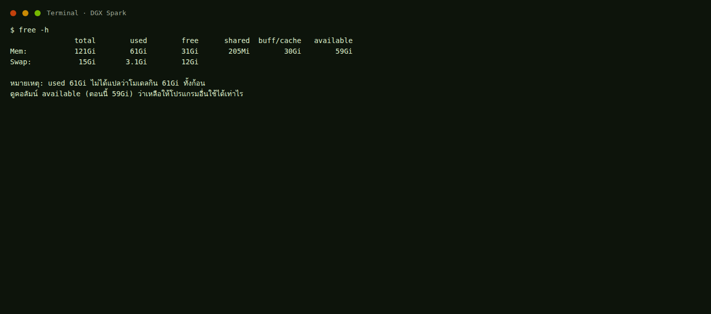
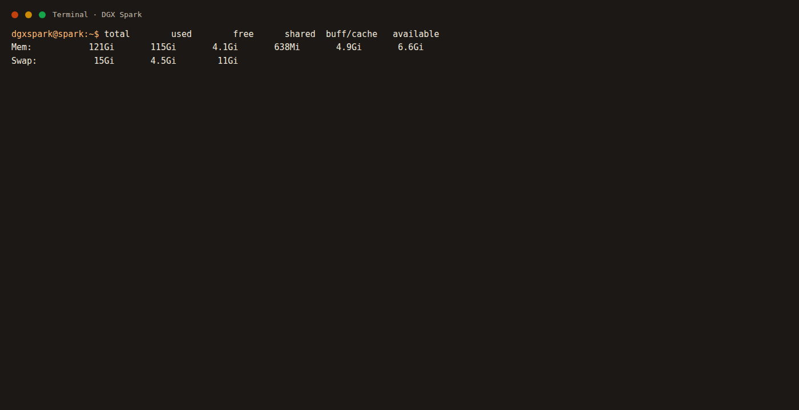

หมวดระบบ
ดูแลเครื่องทั้งก้อน
รวมคำสั่งเปิดปิดหลายโปรแกรม และการอ่าน RAM ไม่ปนกับวิธีคุยแชทหรือต่อโหนดภาพ
เปิดปิดทั้งสตูดิโอ
พักเครื่องแบบเหลือเว็บไว้ดู
stop-model
คุยต่อด้วย Nemotron
start-nemotron
เขียนโค้ดด้วยโมเดลในเครื่อง
claude-local qwen35
รายละเอียดอยู่ที่ หมวด Claude Code อย่าพิมพ์แค่ claude ถ้าต้องการโมเดล local
ปิดทุกอย่างที่เกี่ยวกับแชท
stop-model stop-webui
ปิดสร้างภาพ
docker stop comfyui-dgx
ดูล็อกโมเดลถ้าเปิดไม่ขึ้น
docker logs --tail 80 vllm-nemotron docker logs --tail 80 vllm-qwen27 docker logs --tail 80 vllm-qwen35
ใช้ชื่อคอนเทนเนอร์ตามตัวที่เพิ่งสตาร์ท ตัวเก่าก่อนมีสคริปต์ชื่อ nemotron-vllm
อ่าน RAM ยังไง
-
พิมพ์
free -h
- ดูคอลัมน์ available ไม่ใช่แค่ free
available คือของที่ใช้ได้จริง
- ถ้า available เหลือไม่กี่ GB ขณะโมเดลเปิดอยู่ นั่นปกติ
- อย่าไปลบไฟล์โมเดลเพื่อเคลียร์ RAM
ไฟล์โมเดลอยู่บนดิสก์ การปิดโปรเซสต่างหากที่คืน RAM


สิ่งที่ห้ามทำ
- ห้ามเปิดโมเดลแชทสองตัวพร้อมกัน
- ห้ามลบโฟลเดอร์
~/.cache/huggingfaceถ้ายังอยากใช้โมเดลเหล่านี้ - ห้ามลบ
~/ai/open-webuiถ้ายังอยากใช้คำสั่ง start-* - ห้ามใช้
docker compose down -vกับ Open WebUI ถ้ายังอยากเก็บประวัติแชท - ห้ามใส่ Hugging Face token ลงในคำสั่งที่เทอร์มินัลจะบันทึกประวัติ
- ห้ามรีสตาร์ทเครื่องเพื่อคืน RAM ถ้าแค่ต้องการพัก ให้ใช้
stop-model - ห้ามกด Run ใน ComfyUI ตอนโหนดยังกรอบแดง แล้วคิดว่าเครื่องพัง